A self-hosted MCP server that gives your AI assistant full student access to Canvas LMS from your phone, laptop or the web. Always on, password-protected, with automatic failover across your computers.

Both editions have the same 209 tools. The difference is where you can use them.
Best if you want Canvas everywhere.
Best if you only need it on one computer.
More than a thin API wrapper. Higher-level tools answer the questions you really have.
What-if scores, “what do I need on the final”, weighted breakdowns and which assignments move your grade most.
Week-ahead view, semester snapshot, study priority ranking and every missing assignment across all courses in one call.
Submit text, links and files. Every write shows a dry-run preview first and only sends when confirmed.
Pull entire threads in one request, reply, and message instructors with recipient lookup.
Files, pages, modules, lecture captions and a full .imscc course export before access ends.
Runs in the background with optional two-computer failover, so the connector stays up when one is off.
The server only listens on your own computer. A private tunnel with a password-protected login is the only way in.
You need Node.js 18+, a Canvas account and a free ngrok account.
npm install -g canvas-lms-mcp-remote mkdir canvas-mcp cd canvas-mcp canvas-lms-mcp-remote init
That folder holds your settings. Prefer git? git clone the repo and run npm install instead.
In Canvas, go to Account → Settings → Approved Integrations → + New Access Token. Copy it right away, because Canvas only shows it once.
Install ngrok, add your authtoken, and claim a free static domain in the ngrok dashboard.
winget install --id Ngrok.Ngrok -e ngrok update ngrok config add-authtoken <your-ngrok-token>
Don't skip ngrok update: the winget version is often too old for ngrok's free plan (ERR_NGROK_121).
.envCopy .env.example to .env and fill in your values.
CANVAS_API_TOKEN=your_canvas_token CANVAS_BASE_URL=https://yourschool.instructure.com CANVAS_MCP_PUBLIC_URL=https://your-domain.ngrok-free.dev CANVAS_MCP_PASSWORD=a_long_random_password CANVAS_MCP_CLUSTER_SECRET=another_long_random_secret
canvas-lms-mcp-remote
From source, run node supervisor.js instead.
When the log says active and serving at https://…, it's running. To start it automatically at logon on Windows, see the README.
In your AI app's settings, add a custom connector (also called a remote MCP server) with the URL https://<your-domain>/mcp and log in with your password. Apps that sync connectors to your account will show it on your phone and desktop too. Then ask your assistant to run test_connection.
Command-line and editor clients: add an HTTP MCP server named canvas with the same URL.
Install it on your desktop and your laptop, or more. One computer serves, the others stand by, and if the active one sleeps or shuts down, another takes over in about a minute. Nobody gets logged out.
git clone https://github.com/Fireiscoolsolo/canvas-lms-mcp-server.git cd canvas-lms-mcp-server npm install
Create .env with the same CANVAS_MCP_PUBLIC_URL, CANVAS_MCP_PASSWORD and CANVAS_MCP_CLUSTER_SECRET as your first computer. Give each computer its own Canvas token so you can revoke one without breaking the others. Move secrets with a password manager or USB drive, never by email or cloud storage.
winget install --id Ngrok.Ngrok -e ngrok update ngrok config add-authtoken <same authtoken as computer A>
Register the same CanvasSupervisor scheduled task, then check supervisor.log. You should see either active and serving or already active and healthy — … starting in standby. Both mean it's working.
Fully stop the active computer. Within about a minute, the other one logs active instance appears to be gone — taking over, and your assistant keeps working.
Everything lives in .env. The first five are required. The shared ones must match on every computer.
| Variable | Default | Description |
|---|---|---|
CANVAS_API_TOKEN required | — | Your Canvas personal access token |
CANVAS_BASE_URL required | — | Your school's Canvas address |
CANVAS_MCP_PUBLIC_URL remote | — | Your ngrok static domain |
CANVAS_MCP_PASSWORD remote | — | Password for the login page |
CANVAS_MCP_CLUSTER_SECRET remote | — | Protects the supervisor's internal endpoints |
CANVAS_ALLOW_WRITES | true | false = read-only mode |
CANVAS_PROFILE | full | core = curated subset of tools |
CANVAS_CACHE_TTL | 60 | Response cache time in seconds |
CANVAS_TIMEZONE | system | Time zone for due-date math |
CANVAS_DOWNLOAD_DIR | ./canvas-downloads | Where downloads are saved |
CANVAS_MCP_PORT | 3939 | Local port |
Covers everything a student account can reach, plus raw_canvas_request for anything else.
Files, pages, modules, captions, exports
Profile, token expiry, rate limits
Full threads, replies, ratings
Permissions, nicknames, favorites
Submit, comment, rubric results
Messages and recipients
What-if, needed score, impact
Missing work, late policy
Read-only: dates, attempts
Events, office-hours booking
Group workspaces
Rubrics and peer reviews
Week ahead, priorities
Raw requests, diagnostics
Smart and keyword search
Your Canvas token never leaves your computer, and your assistant can't act without asking first.
Anything that sends, submits, posts or deletes shows a preview first and needs confirm: true.
Text other people wrote is wrapped in CANVAS_CONTENT markers and labelled as untrusted.
Quiz attempt endpoints are deliberately left out and blocked.
Login is rate limited, access tokens last 1 hour and refresh tokens are replaced every time they're used.
.env, oauth-store.json and supervisor.log. All three are already listed in .gitignore.